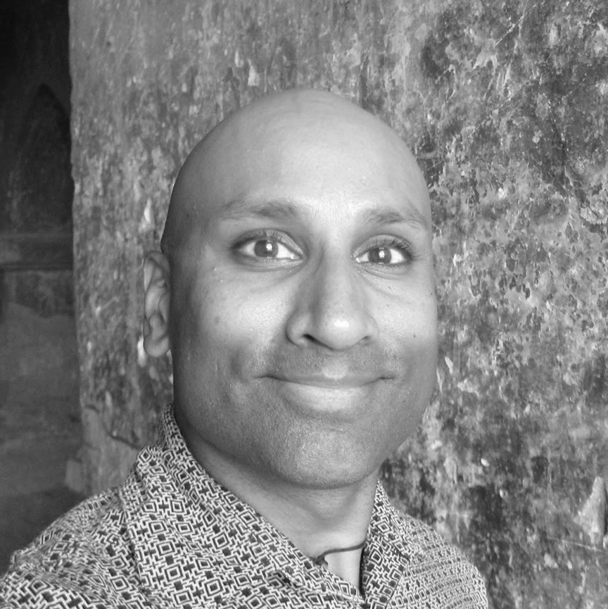

Sharad Sreenivasan
Experience
Visiting Nurse Service of New York (NY). February, 2017 - present. Social Worker, Hospice and Palliative Care Program. Bilingual (Spanish). Work collaboratively as part of an interdisciplinary care team. Conduct home visits for psychosocial assessment and to help patients and families clarify goals of care and end of life treatment options, including obtaining DNROs and completing MOLST forms. Provide education on hospice philosophy and model of care. Provide ongoing support to patients and families as they negotiate the end-of-life and dying process.
IDP Education/Australian Centre for Education (Cambodia). July - December 2016. English Teacher. Taught ESL to children and adults. Planned lessons, taught classes, and participated in staff development seminars. Studied Khmer language to increase language awareness.
ES Tibet (Dharamsala, India). November, 2015 - February, 2016 Volunteer English Teacher. Taught English to young adult Tibetan refugees at an NGO. Lived on-site at the school in a rural area under very basic conditions. Planned lessons and taught classes on a full-time schedule. Participated in test preparation seminars and in organized social activities with the students. Provided guidance, tutoring and support to them as needed.
Visiting Nurse Service of New York (NY). August, 2008 - August, 2014. Staff Social Worker. Bilingual (Spanish). Conducted home visits to perform psychosocial assessment, assist with long term care planning and provide a broad range of medical social services as a member of an interdisciplinary team. Served as covering Social Work Manager for Manhattan when necessary. Served as liaison between Mount Sinai inpatient care team, VNSNY clinical intake staff and VNSNY community care team to facilitate discharges with medically and psychosocially complex patients. Served on the VNSNY Shared Governance initiative.
South Bronx Health Center for Children & Families (NY). June, 1999-August, 2008. Senior Social Worker & Coordinator of Mental Health & Social Services. Bilingual (Spanish). Managed the clinic's mental health & social services. Served on the health center’s management team. Provided long and short term clinical treatment, including crisis intervention. Supervised case manager coordinating a wide range of concrete services and referrals. Served on the clinic's HIV care management team. Co-led a smoking cessation group. Served on work-process Re-Engineering Team in 2002. Participated in Strategic Planning initiative. Participated in health center's Quality Improvement initiative. Worked with IT department on the development of an internal website for mental health and social services.
Abraham House (Bronx, NY). 2004 - 2007. Consultant. Provided training and development and case management supervision services to paraprofessional social services and mental health staff at an alternative to incarceration program serving men and their families.